State 3 things that have inspired you when creating your website

•	The three things that have inspired me when creating my website is firstly is how there are a lot of platform online nowadays used to pass information very easily in a very structured form.
•	Secondly, this module had given me a lot of knowledge on how I can produce a very efficient website which other people can use and navigate through it.
•	Thirdly what inspired me is that it is fun to create a website when you can understand how a website works. 

State 3 ways in which your site is accessible

•	My website is accessible as it is user friendly. It has a lot of navigation features available. 
•	It has a lot of text available which makes it easy to understand what the website in conveying. 
•	It also has some videos and audios which explains what message is being passed on to. 

State 3 ways in which you have considered usability in your site.

•	I made sure that the content is all related to a common topic Sports. 
•	The information is all straightforward and easy to understand and read as well.
•	There are navigational links which connects each pages and even to other websites such as facebook, Instagram, etc…

State 3 things you had to learn/find out by yourself when creating your site, and describe how you did that (i.e. what searches you did, any new tools/techniques you learned, any changes/adaptations you made to a particular resource to make it work with your site).

•	I learnt how to use a css style sheet online to attach it within the html in order to add additional types of icons. 
•	I learnt how to use animation using the website w3shcool as mentioned within the video lectures.
•	I learnt how to implement audio and videos within the website using the w3school as instructed to use this site to obtain more information.

What aspect(s) of your work do you think worked well and why?

I believe the part where I could animate all pictures worked well as it gives a good effect to make the website more lively. Other features like facebook, Instagram and twitter also works well which makes it more user friendly. Even videos and audios works fine as it makes the website more attractive and fun to use. 

What aspect(s) of your work could be improved, and how might you do things differently another time?

Aspects of my work which could be improved are adding fill up forms, or things like log in with user name and password. Perhaps even more animations could be added or using images as background are things that could be done to make the website more interesting. 

*** Please note that changes has been made on the boxing site as the file size was too big, therefore a video and a picture had been deleted from the file.
//

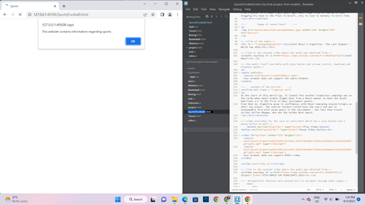
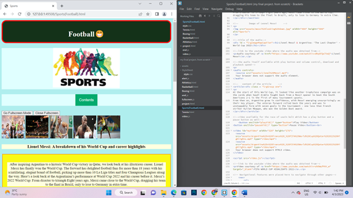>
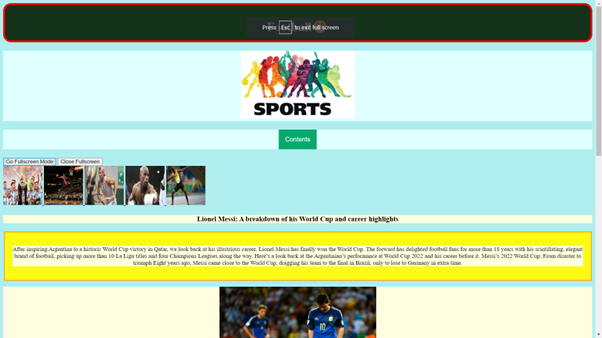
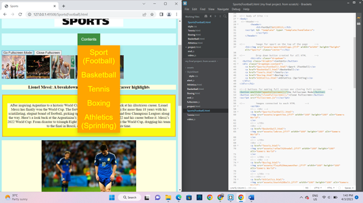
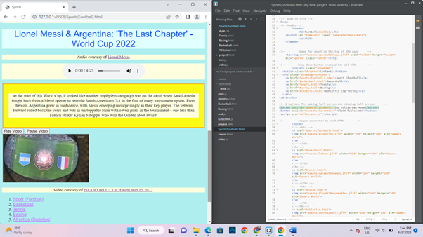
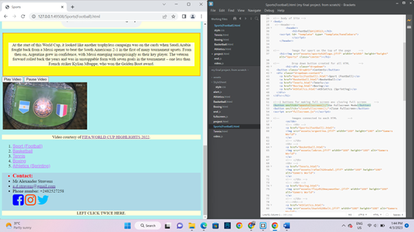
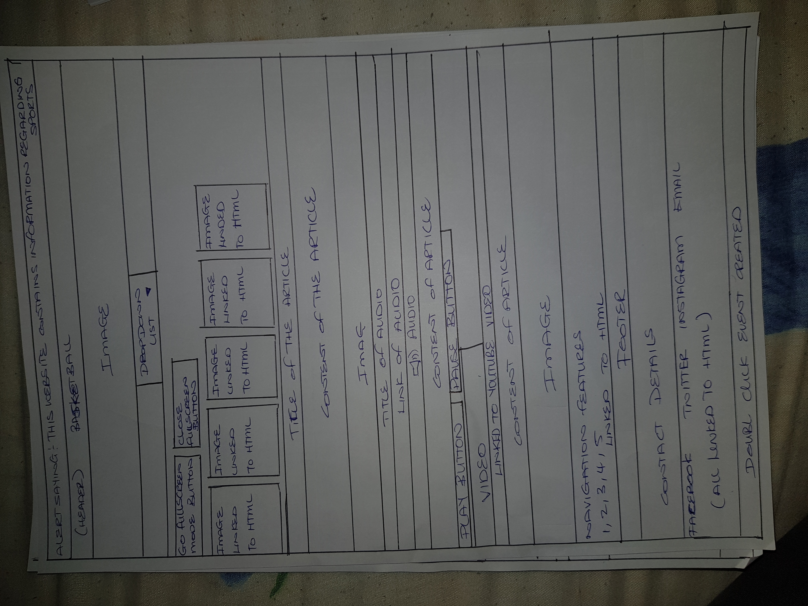
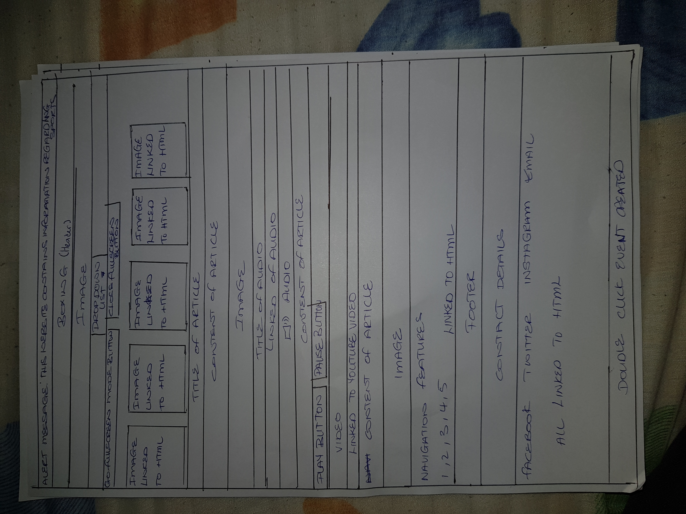
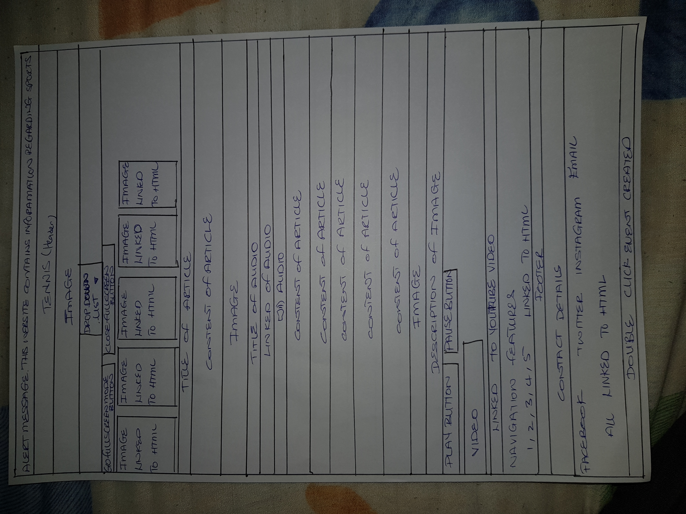
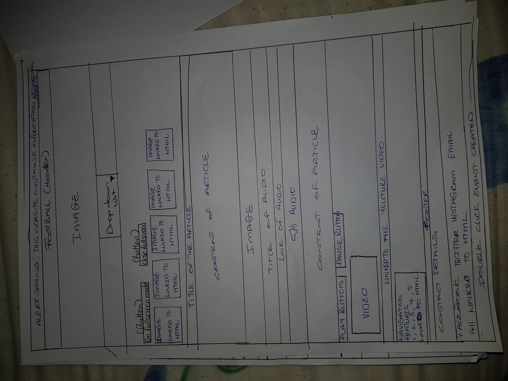
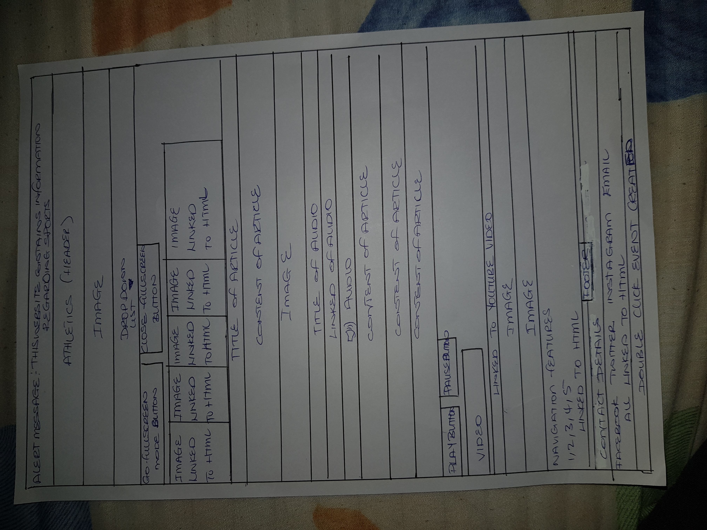


Appendices: Site Map, Wireframes and Mockups 
